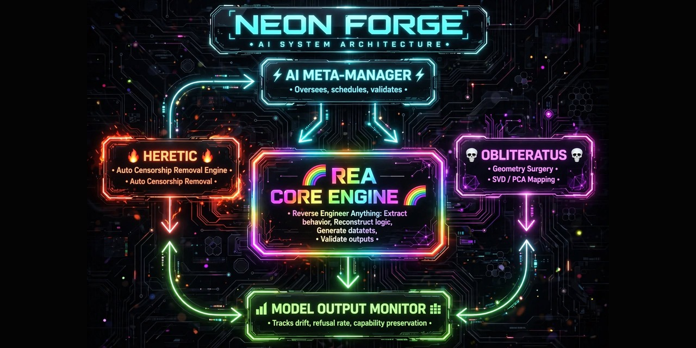

NEON FORGE
AI SYSTEM ARCHITECTURE

Three engines, one meta-manager. Neon Forge extracts model behavior with REA, removes refusal directions with Heretic (directional ablation), maps the residual subspace with SVD/PCA and reversible activation steering with OBLITERATUS — then gates the run on capability preservation and drift. Every claim is backed by JSON artifacts, not assertions.
| Engine | Stage | License |
|---|---|---|
| REA | probe & extract behavior | MIT |
| Heretic | directional ablation of refusals | AGPL-3.0 |
| OBLITERATUS | SVD/PCA geometry surgery | AGPL-3.0 |
git clone https://github.com/Insider77Circle/NEON-FORGE.git cd NEON-FORGE python main.py